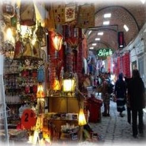
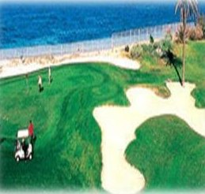
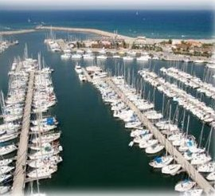

The ATSIP Executive Committee is pleased to announce the 8th IEEE ATSIP edition, International Ranked Conference on Advanced Technologies for Signal and Image Processing, ATSIP'2027. The conference provides a high-level international forum for researchers, engineers and scientists from around the world to present and discuss recent advances and applications. It features world-class speakers, plenary sessions, business and industrial exhibits, and poster sessions.



ATSIP conference ranking: CORE database — portal.core.edu.au/conf-ranks/2231/ · Every edition since 2014 has been published by IEEE and indexed in IEEE Xplore.
Topics
Main topics, with sub-topics, include but are not limited to:
Medical signal/image & Computer Aided Diagnosis
Habib BENALI (CAN) & Khalil CHTOUROU (TUN) & Lamia SELLAMI (TUN)
IoT & Embedded Systems, RF Applications
Mohamed ATRI (KSA) & Mohamed GHORBEL (TUN) & Ahmed KAFFEL (USA)
Remote Sensing and Assimilation
Mehrez ZRIBI (FRA) & Imed R. FARAH (TUN) & Abdelaziz KALLEL (TUN)
New Technologies for Communications Networking
Riadh ABDELFATTAH (TUN) & Christophe GROVA (CAN) & Abdelmalek TOUMI (FRA)
Image & Video, Speech & Audio Processing
Rachid JENNANE (FRA) & Sofia BEN JEBARA (TUN) & Mondher FRIKHA (TUN)
Big Data, Cloud Computing Applications
Naoufel KRAIM (KSA) & Mohamed FARAH (TUN) & Ali DOUIK (TUN)
AI for Advanced Technologies
Bhiksha RAJ (USA) & Zied LACHIRI (TUN) & Najoua BEN AMARA (TUN)
Advanced Technologies for Security
Gérard CHOLLET (FRA) & Mounir SAYADI (TUN)
Paper submission
Authors are invited to submit full-length papers of no more than six pages including results, figures and references, in IEEE conference format. Papers are accepted only through the conference submission system, cmt3.research.microsoft.com/ATSIP2027. Submissions must be original and must not have been published previously or be under consideration for publication elsewhere while being evaluated for this conference. Accepted and presented papers will be submitted for inclusion in IEEE Xplore, subject to meeting IEEE Xplore's scope and quality requirements.
Templates (Word and LaTeX): ieee.org/conferences/publishing/templates.html · template-selector.ieee.org — use the A4 variant.
Selected papers, best papers
Best papers will be awarded. Selected papers will be invited to extend their work for special issues of international journals.
Special sessions, round tables
Alongside the regular sessions, special sessions are an important part of the technical programme. The sessions below are organised; further proposals give the session title, a short rationale and the organisers.
- Medical signal/image and cognitive neuroscience Habib BENALI (CAN) & Julien DOYON (CAN)
- Artificial intelligence in neurodegenerative diseases Nawres KHLIFA (TUN), Rostom MABROUK (CAN), Hajer KACHNAOUI (TUN) & Bouchra GUELIB (ALG)
- Artificial intelligence for control and navigation of robots Hassene SEDDIK (TUN) & Chiraz BEN JABEUR (TUN) & Nadhir MESAI (FRA)
- Signal and image processing for disease and pattern identification Hassene SEDDIK (TUN) & Slim BEN CHAABENE (TUN) & Zouhair MBARKI (TUN) & Amine BEN SLAMA (TUN)
- Recent advances in AI for emotion recognition Leila BELTAIFA (FRA), Bhiksha RAJ (USA), Hassene SEDDIK (TUN) & Gérard CHOLLET (FRA)
- Deep learning for medical imaging and CAD in health information systems Rachid JENNANE (FRA) & Rania HAMMEMI (TUN) & Aymen QAHMESH (KSA)
- Advanced AI models for biometrics Ahmed KAFFEL (USA), Imed Riadh FARAH (TUN), Najoua BEN AMARA (TUN) & Aymen QAHMESH (KSA)
- Artificial intelligence for remote sensing images Mehrez ZRIBI (FRA), Abdelmalek TOUMI (FRA) & Abdelaziz KALLEL (TUN)
Important deadlines
| Submission of regular papers | 30 March 2027 |
| Notification of paper acceptance | 1 May 2027 |
| Camera-ready paper and copyright form | 15 May 2027 |
| Author's registration deadline | 30 May 2027 |
| Final programme | 25 June 2027 |
| Conference | 1 – 4 July 2027 |
Venue and organisation
ATSIP'2027 is held in Sousse, Tunisia, from 1 to 4 July 2027, organised by the ATISP laboratory (ENET'Com, University of Sfax) with the ATSI association and the IEEE Tunisia Section. Venue and accommodation details are published on the conference website.
More information: atsip-conference.github.io · atsip.conf@gmail.com